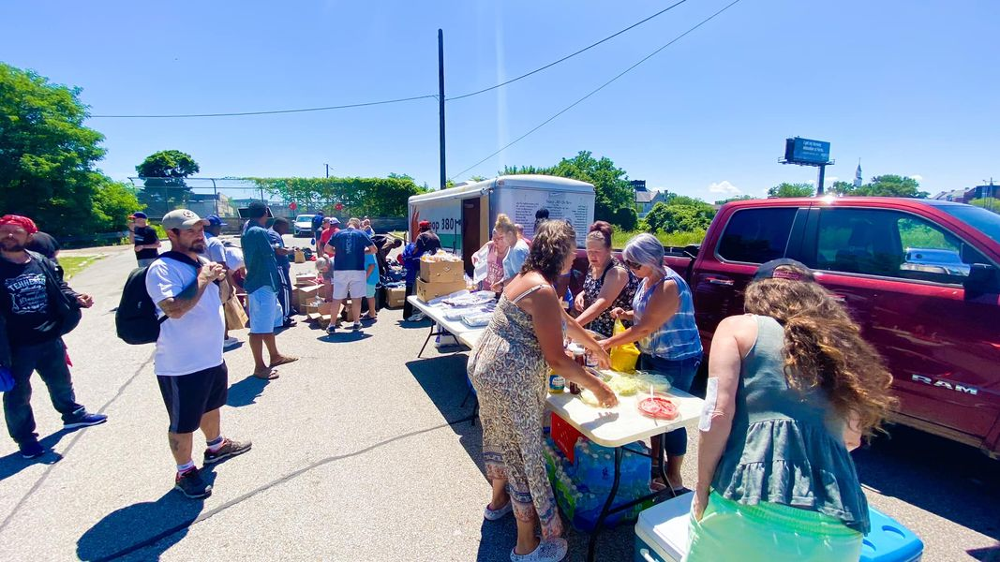

Mobile uploads
I got to check out the Treasa Bartley Foundation in action at Grace Park.
They have the most AMAZING food buffet and clothes giveaways.
They come to Grace Park the first Sunday of every month starting at about noon.
And do you see that dude in the white shirt? That’s my friend @[100027152946830:2048:Josh Imler]. He is sober and in a program to get housing.
You have to be ready to change your life. But when you are you need trusted support groups who have already built relationships with you to help you get to the place you want to go. This group and others have been friends with Josh and MANY others through thick and thin.